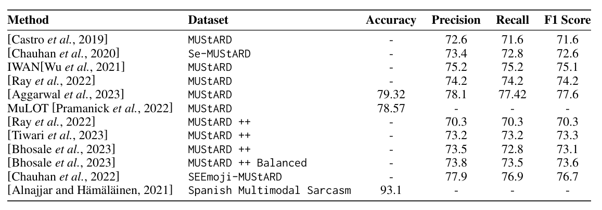
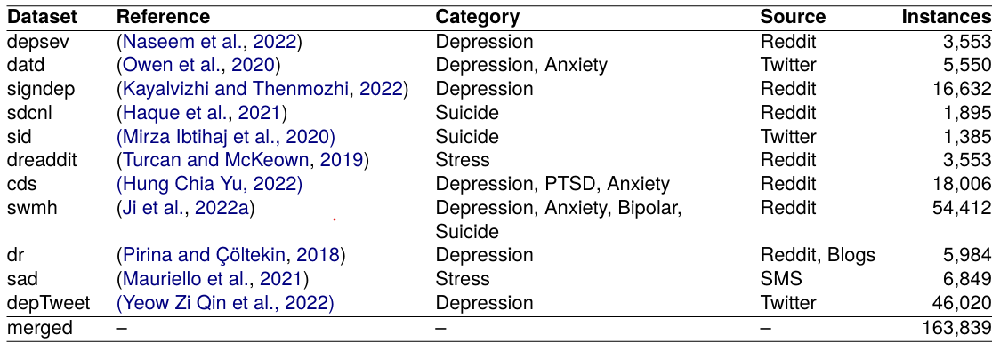
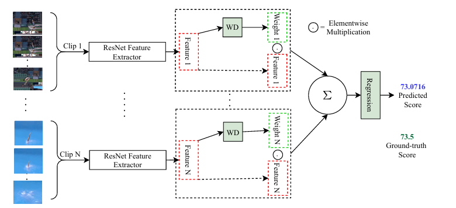

Research

Value-Added Based Algorithmic Matching of Mediators to Court Cases in Kenya
In Kenyan Judiciary, cases go to mediation before trail. Mediators are court apppointed and licensed to work in specific courts and on certain case types. This project focuses on developing an automated algorithm to match mediators with a focus to maximizer overall mediator success rate while managing caseload distribution. We use Value Added model to estimate mediator contribution to case outcomes. This work is being done in collaboration with the World Bank.

Street-Level AI: Are Large Language Models Ready for Real-World Judgments?
We explore the feasibility of LLMs in replacing street level bureaucrats. Specifically, we focus on homeless resource allocations at St Louis, MO.
First, we compare how LLMs(GPT4, Gemma, LLaMA, Gemini etc.) allocate interventions when given a pair of households from St Louis HMIS dataset. We compare these decisions with non-expert humans in whether they consistently prioritize vulnerability or outcome. Secondly, we use LLMs to induce rankings of households by their vulnerability and compare with well established tools like VI-SPDAT and RMFS. Our findings lead us to believe LLMs are inconsistent in judging the vulnerability of households, and they are not prepared to replace expert case workers.
Accepted for publication at AIES 2025
A Survey of Multimodal Sarcasm Detection
As part of literature study for multimodal sarcasm detection, we review existing approaches and datasets in the field. We survey papers published between 2018 and 2023 on the topic, and discuss the models and datasets used for this task. We also present future research directions in MSD
Published at IJCAI 2024
MentalHelp: A Multi-Task Dataset for Mental Health in Social Media
We construct a Large Scale semi supervised multitask dataset for mental illness detection tasks by fine tuning BERT based language models on smaller datasets of different mental health tasks. We use ensemble of these models to generate labels for combined dataset for all tasks. We performed a comprehensive evaluation of 10 pre-trained and task fine tuned models on 11 benchmark datasets Published at LREC COLING 2024

Action Quality Assessment Using Weighted Aggregation
Action quality assessment (AQA) aims at automatically judging human action based on a video of the said action and assigning a performance score to it. The majority of works in the existing literature on AQ divide RGB videos into short clips, transform these clips to higher level representations using Convolutional 3D (C3D) networks, and aggre gate them through averaging. These higher-level representations are used to perform AQA. We nd that the current clip level feature aggregation technique of averaging is insu cient to capture the relative importance of clip level features. In this work, we propose a learning-based weighted averaging technique. Using this technique, better performance can be obtained without sacri cing too much computational resources. We call this technique Weight-Decider(WD). We also experiment with ResNets for learning better representations for action quality assessment. We as sess the e ects of the depth and input clip size of the convolutional neural network on the quality of action score predictions. We achieve a new state-of-the-art Spearmans rank correlation of 0.9315 (an increase of 0.45%) on the MTL-AQA dataset using a 34 layer (2+1)D ResNet with the capability of processing 32 frame clips, with WD aggregation.
Published at IBPRIA 2022